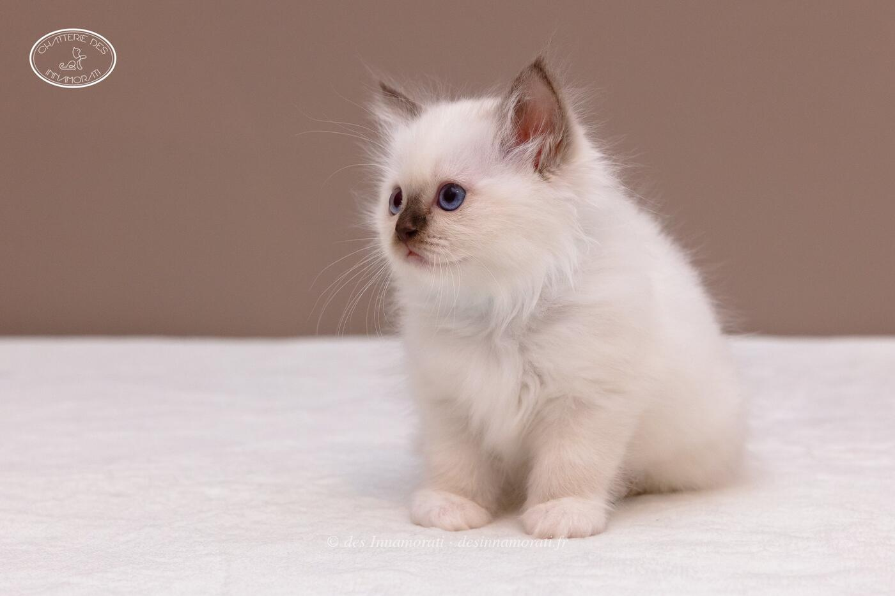

RobeFemelle · Chocolat point
StatutAdoptée
Album16 photos, de décembre 2018 à décembre 2021


Photos réduites et marquées. Elles appartiennent à la Chatterie des Innamorati et ne peuvent pas être reprises dans une annonce.

Photos réduites et marquées. Elles appartiennent à la Chatterie des Innamorati et ne peuvent pas être reprises dans une annonce.